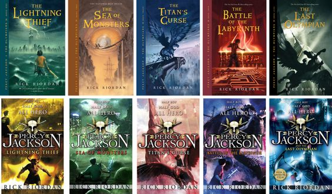
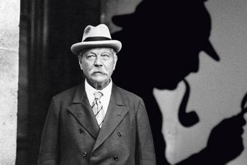

Rick memang penulis yang dekat dengan anak-anak. Suatu hari dia pun memutuskan menulis untuk anak-anak. ”Saat itu Haley sedang mempelajari mitologi Yunani di kelas dua. Sebelum tidur, dia meminta saya mendongeng tentang para dewa dan pahlawan. Saya telah mengajar mitologi Yunani tingkat SMP selama bertahun-tahun, jadi saya senang-senang saja. Ketika saya kehabisan cerita tentang mitos-mitos tersebut, Haley kecewa dan meminta saya untuk mengarang cerita baru menggunakan tokoh-tokoh yang sama.”
Ketika itu, Haley baru saja didiagnosis mengidap ADHD (Attention Deficit Hyperactivity Disorder), suatu kondisi yang menyebabkan pengidapnya sulit memusatkan perhatian, dan disleksia. Karena termotivasi dengan permintaan putranya, Rick pun mengarang seorang tokoh bernama Percy Jackson yang memiliki misi untuk mengembalikan petir Zeus. Butuh tiga malam bagi Rick menceritakan keseluruhan kisahnya. Ketika cerita tersebut tamat, Haley memberi usul kepada ayahnya untuk menuangkannya ke dalam sebuah buku.
“Menciptakan Percy sebagai tokoh yang mengidap ADHD dan disleksia merupakan cara saya dalam memberi penghargaan terhadap potensi yang dimiliki semua anak dengan kondisi serupa,” kata Rick.
Rick pun menyelipkan pesan mulia di dalam seri Percy Jackson. “Menjadi beda itu bukan sesuatu yang buruk. Terkadang, perbedaan itu justru merupakan tanda bahwa si anak benar-benar berbakat. Itulah yang disadari Percy mengenai dirinya sendiri dalam The Lightning Thief.”

Doyle sempat bekerja sebagai dokter di Greenland Hope of Peterhead pada tahun 1880 dan sebagai ahli bedah untuk kapal SS Mayumba setelah ia lulus dan mendapat gelar M.B, C.M. Doyle menghabiskan waktu selama hampir satu tahun bekerja sebagai dokter di kapal tersebut dan berkeliling ke seluruh dunia.
Saat kembali ke Inggris, pada 1882 Conan membuka praktek kedokteran di Southsea yang terletak di daerah pantai di bagian selatan Inggris. Awalnya kehidupan Conan Doyle sangat susah karena dia hanya memiliki sangat sedikit pasien dan dia harus bekerja keras untuk memperoleh uang guna membiayai hidupnya. Apalagi di tahun 1885, Doyle menikahi Mary Louise Hawkins. Tentunya banyak kebutuhan yang harus ia penuhi untuk menghidupi keluarganya.
Saat kekurangan uang inilah, ia pun berinisiatif untuk menulis sebuah cerita yang lebih baik daripada cerita-cerita yang pernah ia buat sebelumnya. Doyle akhirnya terinspirasi untuk mencoba membuat cerita tentang karakter seorang detektif setelah ia membaca beberapa cerita detektif C. Auguste Dupin karangan Edgar Allan Poe dan M. Lecoq karangan Émile Gaboriau. Namun berbeda dengan cerita kedua detektif di atas, Doyle ingin mencoba menciptakan karakter yang mengerti tentang ilmu forensik dan kedokteran serta memiliki kemampuan deduksi layaknya dosennya sekaligus mentornya semasa ia kuliah, Dr. Joseph Bell.
Ia memadukan kemampuan Dr. Joseph Bell dengan dua tokoh karakter tersebut. Kisah Dupin yang memiliki gaya tulisan naratif dari kacamata seorang tokoh asisten tersebut diadopsi oleh Conan Doyle dalam mengisahkan tokohnya. Selain itu, kemampuan observasi yang mendalam seperti di cerita Dupin dipadukan dengan kemampuan menyamar ala Lecoq. Doyle kemudian memberi nama sang detektifnya Sherlock Holmes, setelah beberapa kali mengganti nama. Mulai dari Sheriddan Hope, Sherringford Holmes, sampai akhirnya menjadi Sherlock Holmes. Termasuk nama Ormond Sacker yang akhirnya diganti dengan nama Dr. John Watson, sahabat dan kolega dari sang detektif tersebut.
Sherlock Holmes akhirnya dimunculkan dalam novelnya berjudul “A Study In Scarlet”, yang sebelumnya sempat diberi nama “A Tangled Skein”. Awalnya Doyle menulis kisah ini pada tahun 1886. Cerita ini diberikan kepada Ward Lock & Co pada tanggal 20 November 1886, dan dibayar seharga £25. Cerita ini baru diterbitkan dan dimuat dalam Beeton’s Christmas Annual pada akhir tahun 1887.
If you need something, you can contact here